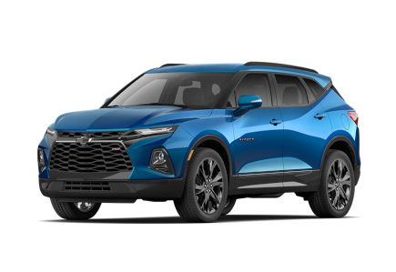

CHEVROLET |
|
 |
Chevrolet es un fabricante estadounidense de automóviles y camiones con sede en Detroit, perteneciente al grupo General Motors. Nació de la alianza de Louis Chevrolet y William Crapo Durant el 3 de noviembre de 1911 |
Chevrolet Corvette |
|
El Chevrolet Corvette es un automóvil deportivo producido por el fabricante estadounidense Chevrolet, división de General Motors (GM), desde 1953. Es fabricado actualmente en la planta de Bowling Green (Kentucky). |
 |
CARACTERISTICAS |
|
Potencia |
495 |
peso |
1200 |
precio |
80000 |
consumo |
10.4 |
cilindrada |
3.5 |
CAMARO |
|
El Chevrolet Camaro es un automóvil deportivo de dos puertas, con motor delantero montado longitudinalmente y de tracción trasera, producido por el fabricante estadounidense Chevrolet Compartía su plataforma y la mayoría de sus componentes con el Pontiac Firebird |
|
CARACTERISTICAS |
|
Potencia |
480 |
peso |
1800 |
precio |
50000 |
consumo |
9.7 |
cilindrada |
4.2 |
BLAZER |
|
El Chevrolet Blazer y GMC Jimmy son dos automóviles todoterreno del segmento E desarrollados por el grupo estadounidense General Motors y vendido bajo las marcas Chevrolet y GMC desde el año 1982. El modelo es derivado de la Chevrolet S-10. |
 |
CARACTERISTICAS |
|
Potencia |
180 |
peso |
1900 |
precio |
21000 |
consumo |
8.0 |
cilindrada |
2.0 |
COLORADO |
|
La Chevrolet Colorado es una camioneta tipo pickup mediana producida dedicada para el campo por el fabricante estadounidense Chevrolet desde el año 2004 en reemplazo de la versión norteamericana de la pickup Chevrolet S-10. |
 |
CARACTERISTICAS |
Potencia |
250 |
peso |
2300 |
precio |
30000 |
consumo |
9.2 |
cilindrada |
2.5 |